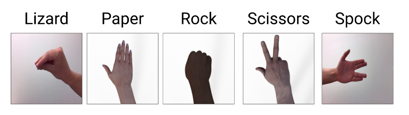

In this web application, you are able to train your model in the browser using your webcam. You will train your model in exactly the same way as in the Rock, Paper, Scissors example but now you will include the Lizard and Spock hand gestures.
Below are a few tips that can help you get started.
Collecting between 50 to100 images for each hand gesture should be good enough for most models. However, feel free to experiment and try to train your model with less or more images.
Wait until Training has Finished before you Download the Model. To make sure training has completed, open the Developer Tools and look at the Console output. When the browser alerts that "Training is Done!" click Ok. After you click Ok, you will see the value of the LOSS being printed in Console. Once the LOSS values stop being printed, you can go ahead and click the "Download Model" button to download the model and its weights.
Your model will be graded based on how it performs on our test set. Below are a couple of images from our testing set:

To train your model, don't stand too far away from the webcam and it's much better if you do not wear sleeves. Below are some sample training images.
Rock Samples:
Paper Samples:
Scissors Samples:
Spock Samples:
Lizard Samples:
Once training is complete, click 'Start Predicting' to see predictions, and 'Stop Predicting' to end. Once you are happy with your model, click 'Download Model' to save the model to your local disk.